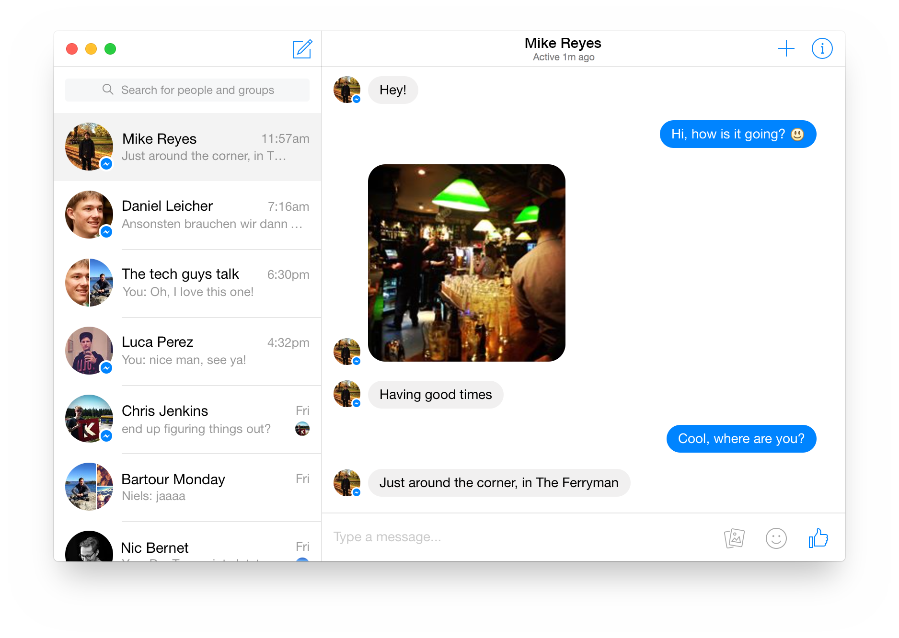

Goofy
Your (unofficial) Facebook Messenger client for OS X
Download

Notifications
Don't miss any messages from your friends. Goofy uses Notification Center, and you can even quick-reply right in notifications!
Fully featured
Goofy has all the features you expect, including stickers, group chats, thumbs up, search and more...
Free & Open Source
Developed as a labor of love, Goofy is completely free; period. It's open source too, meaning you can
contribute
!
Nice, ...but how?
Basically this is just a web view of
Messenger.com
with some added code to make it native and fancy.
Questions?
Answers.
Download
Created by
Daniel Büchele
. If you have feedback or experience any problems, let me know
@danielbuechele
.
Design by
Doney den Ouden
.
Say hi
@doney
.
Maintained by
Jerrold Poh
.
Contact me if something's broken üë∑‚Äç‚ôÇÔ∏è
@jklp
.